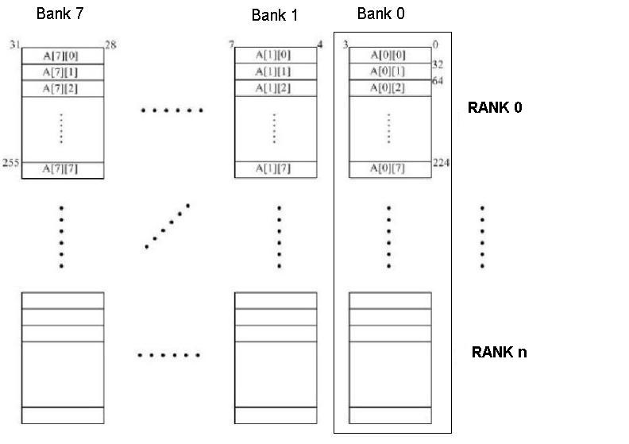
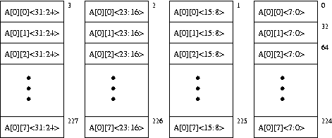

You are encouraged to work on the problem set in groups and turn in one problem set for the entire group. Remember to put all your names on the solution sheet. Also remember to put the name of the TA in whose discussion section you would like the problem set returned to you.
Consider the following piece of code:
for(i = 0; i < 8; ++i){
for(j = 0; j < 8; ++j){
sum = sum + A[i][j];
}
}The figure below shows an 8-way interleaved, byte-addressable memory. The total size of the memory is 4KB. The elements of the 2-dimensional array, A, are 4-bytes in length and are stored in the memory in column-major order (i.e., columns of A are stored in consecutive memory locations) as shown. The width of the bus is 32 bits, and each memory access takes 10 cycles.
A more detailed picture of the memory chips in Rank 0 of Bank 0 is shown below.
Since the address space of the memory is 4KB, 12 bits are needed to uniquely
identify each memory location, i.e., Addr[11:0]. Specify which bits of the address
will be used for:
Addr[_____:_____]
Addr[_____:_____]
Addr[_____:_____]
Addr[_____:_____]
How many cycles are spent accessing memory during the execution of the above code? Compare this with the number of memory access cycles it would take if the memory were not interleaved (i.e., a single 4-byte wide array).
Can any change be made to the current interleaving scheme to optimize the number of cycles spent accessing memory? If yes, which bits of the address will be used to specify the byte on bus, interleaving, etc. (use the same format as in part a)? With the new interleaving scheme, how many cycles are spent accessing memory? Remember that the elements of A will still be stored in column-major order.
Using the original interleaving scheme, what small changes can be made to the piece of code to optimize the number of cycles spent accessing memory? How many cycles are spent accessing memory using the modified code?
The figure below illustrates the logic and
memory to support 512 MB (byte addressable) of physical memory, supporting
unaligned accesses. The ISA contains LDByte, LDHalfWord, LDWord,
STByte , STHalfWord and STWord instructions, where a word is 32 bits. Bit 28
serves as a chip enable (active high). If this bit is high the data of the
memory is loaded on the bus, otherwise the output of the memory chip floats (tri-stated).
Note: the byte rotators in the figure are right rotators.
Construct the truth table to implement the LOGIC block, having inputs SIZE, R/W,
1st or 2nd access, PHYS_ADDR[1:0] and the outputs shown in the above figure. Assume
that the value of SIZE can be Byte (00), HalfWord (01), and Word (10). Clearly
explain what function each output serves.
A bit-serial transmitter-receiver system operates at 1 GHz. It appends an even parity bit after every eight bits processed, as described in class. Therefore, for each byte of data, it transmits a nine bit message. Since the system is bit-serial, one message bit is transmitted each cycle. Assume that the probability of a bit being flipped while it is being transmitted is 10-7. In your solution, treat bit flips as statistically independent events.
What is the probability that a transmitted nine bit message will have one or more flipped bits? Hint: what is the probability that a transmitted nine bit message will have zero flipped bits?
If the parity check logic in the receiver detects an error in a message, how many bits may have been flipped in that message? (1, 2, 3, 4, 5, 6, 7, 8, 9 – circle all that apply).
If the parity check logic in the receiver does not detect an error in a message, how many bits may have been flipped in that message? (1, 2, 3, 4, 5, 6, 7, 8, 9 – circle all that apply).
What is the probability that a transmitted nine bit message will have exactly:
Notice that the probability of exactly three bits being flipped is negligible compared to the probabilities of one or two bits being flipped. Thus, for the rest of this problem, you may neglect the probabilities of three or more bits being flipped in one message.
Note: this course is not about probability theory, and the undergraduate probability course (EE351K) is not a prerequisite. Thus, if you have difficulty solving this problem, please see one of the TA's.
If the latency of a DRAM memory bank is 37 cycles, into how many banks would you interleave this memory in order to fully hide this latency when making sequential memory accesses?
An ISA supports an 8-bit, byte-addressable virtual address space. The corresponding physical memory has only 128 bytes. Each page contains 16 bytes. A simple, one-level translation scheme is used and the page table resides in physical memory. The initial contents of the frames of physical memory are shown below.
| Frame Number | Frame Contents |
|---|---|
| 0 | empty |
| 1 | Page 13 |
| 2 | Page 5 |
| 3 | Page 2 |
| 4 | empty |
| 5 | Page 0 |
| 6 | empty |
| 7 | Page Table |
A three-entry Translation Lookaside Buffer that uses LRU replacement is added to this system. Initially, this TLB contains the entries for pages 0, 2, and 13. For the following sequence of references, put a circle around those that generate a TLB hit and put a rectangle around those that generate a page fault. What is the hit rate of the TLB for this sequence of references? (Note: LRU policy is used to select pages for replacement in physical memory.)
References (to pages): 0, 13, 5, 2, 14, 14, 13, 6, 6, 13, 15, 14, 15, 13, 4, 3.
We have been referring to the LC-3b memory as 2^16 bytes of memory, byte-addressable. This is the memory that the user sees, and may bear no relationship to the actual physical memory. Suppose that the actual physical address space is 8K bytes, and our page size is 512 bytes. What is the size of the PFN? Suppose we have a virtual memory system in which virtual memory is divided into User Space and System Space, and System Page Table remains resident in physical memory. System space includes trap vector table, interrupt vector table, operating system and supervisor stack as shown in Figure A.1 in Appendix A. The rest of the address space in Figure A.1 is user space. If each PTE contained, in addition to the PFN, a Valid bit, a modified bit, and two bits of access control, how many bits of physical memory would be required to store the System Page Table?
A machine with 64KB, byte addressable virtual memory and 4KB physical memory has two-level virtual address translation similar to the VAX. The page size of this machine is 256 bytes. Virtual address space is partitioned into the P0 space, P1 space, system space and reserved space. The space a virtual address belongs to is specified by the most significant two bits of the virtual address, with 00 indicating P0 space, 01 indicating P1 space, and 10 indicating system space. Assume that the PTE is 32 bits and contains only the Valid bit and the PFN in the format V0000000..000PFN.
For a single load instruction the physical memory was accessed three
times, excluding instruction fetch. The
first access was at location x108 and the value read from
that location (x108, x109, x10A, x10B) was x80000004. Hint: What does
this value mean?
The second access was at location x45C and the third access was at
location x942.
If SBR = x100, P0BR = x8250 and P1BR = x8350,
x45C?x45C?x942?Note: In this problem, the PTBR does not point to the first entry in the user space page table, which actually starts at 0x3A0. This is an optimization to make it easier for the machine to index into the user space page table .
Consider a processor that supports a 9-bit physical address space with byte addressable memory. We would like the processor to support a virtual memory system. The features of the virtual memory system are:
Virtual Memory Size : 4 Kbytes (12 bit address-space)
Page Size : 32 bytes
PTBR : 0x380
SBR : 0x1E0
The virtual memory is divided into two spaces: system space and user space. System space is the first kilobyte of the virtual address space (i.e., most significant two bits of the virtual address are 00). The rest of the virtual memory is user space. The system page table remains resident in physical memory. Each PTE contains, in addition to the PFN, a Valid bit, a modified bit and 2 bits for access control. The format of the PTE is
| Valid | Modified | Access Control | PFN |
(Valid bit is the most significant bit of the PTE and the PFN is stored in the least significant bits.)
How many virtual pages does the system accommodate?
What is the size of the PFN? How big is the PTE?
How many bytes are required for storing the entire user space pagetable? How many pages does this correspond to?
Since the user space page table can occupy a significant portion of the the physical memory, this system uses a 2 level address translation scheme, by storing the user space Page Table in virtual memory (similar to VAX).
Given the virtual address 0x7AC what is the Physical address?
The following table shows the contents of the physical memory that you may need to do the translation:
|
|
The virtual address of variable X is x3456789A. Find the physical address
of X. Assume a Virtual Memory model similar to VAX.
Remember that in VAX each Virtual Address consists of:
You will need to know the contents of P0BR: x8AC40000 and SBR: x000C8000.
You will also need to know the contents of the following physical memory locations:
x1EBA6EF0: x80000A72 x0022D958: x800F5D37
Some intermediate questions to help you:
An instruction is said to generate a page fault if a page fault occurs at any time during the processing of that instruction.
Let's say we added a virtual memory system to the LC-3b. Which instructions can possibly generate a page fault? What is the maximum number of page faults an instruction can possibly generate while it is being processed? Which instructions can possibly generate that maximum number of page faults? Assume that the virtual memory system added uses a one-level translation scheme and the page table is always resident in physical memory.